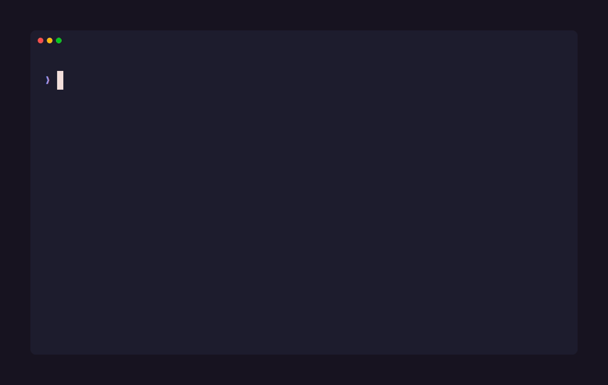

Your agent can read git log.
It can't read the four things you tried last Tuesday that didn't work.
NexusMem records what actually happened on your machine — shell commands and their exit codes, git history down to the patch of each changed file, project docs, optionally your assistant transcripts — into a local SQLite database, and serves back a ranked, token-budgeted slice of it on demand. Everything stays on disk. No account, no cloud, no telemetry.
# from inside any git repository
npx nexusmem init
npx nexusmem sync
Real output, this repo's own history
Init, sync, status, and a query — recorded against NexusMem's own repository.

A commit and a docs section, ranked against each other
Nothing here is summarized by a model on the way out. The ranker just decides what not to send.
$ nexusmem query "windows spawn failure" Relevant history for: windows spawn failure - 2026-08-09 fix: distinguish a failed git spawn from "not a git repository" readRepoInfo collapsed three unrelated failures into one error: git running and reporting the path is not a work tree, git not being installed, and the process failing to spawn at all. Dogfooding hit the third case in two separate sessions... - 2026-08-09 README.md — Before a tagged release - [ ] Retry on transient process-spawn failures on Windows $
Every source normalizes to the same shape
A commit, a shell command and a docs section compete on equal terms — BM25 and vector search, fused by rank.
Shell history + exit codes
A PSReadLine-first hook captures working directory, exit code and a real timestamp. A failed command is a stronger signal than a successful one.
Git commits & diffs
Full commit history plus the patch of each changed file — what shipped, down to the lines that changed.
Project docs
Markdown chunked at heading boundaries. Ask why a decision was made and get the actual rationale section back.
Failure → fix chains
Opt-in. Links a failed command to whatever later resolved it, so its fix rides along in the same result automatically.
Session summaries
Opt-in, local Ollama model, ingest time only. One distilled node — what was decided and why — next to the raw exchanges.
Cross-project recall
query --all-projects searches every repo you've synced, tagged by source. Off by default, scoped when off.
Forget, for real
nexusmem forget <value> deletes every matching node and writes a standing deny-list entry, so it can't be re-ingested by a later sync --rebuild or a fresh clone.
Provenance, staleness & review
Every node carries a trust tier — observed, authored, recorded, derived — that decays at its own rate. A local model checks for contradictions automatically on sync and flags what it finds, dismissible with stale --dismiss if it's wrong. nexusmem review lets a human verify or reject a node directly, independent of the model.
Multi-language import graph
JS, TS, Python, Go, Rust, Java and PHP: parses real import/module statements into edges between files, so "what imports this" is answerable without a repo-wide grep.
GitHub issues & PRs
Opt-in — the first source with a real external dependency. Reads issue/PR threads via the gh CLI, title through every comment, into the same searchable memory.
Two numbers, kept apart on purpose
End-to-end saving compares the packed context NexusMem sends against reading, in full, the files its own ranking identified as relevant.
Both clear the original >70% target, measured with a reproducible script
(scripts/benchmark.ts) anyone can re-run.
The file set each query is graded against comes from NexusMem's own ranking, not an
independent judge — this measures what packing saves once retrieval already picked a
candidate set, not whether that set was the right one. Full methodology in the README.
For a source-level comparison against similar tools' own numbers, see
docs/competitor-comparison.md
(vs. projectmem) and
docs/competitor-comparison-yesmem.md
(vs. YesMem, including native Windows support vs. its documented WSL2 requirement).
| Operation | Time |
|---|---|
| BM25 retrieval (FTS5) | ~1.1 ms |
| Vector KNN (sqlite-vec) | ~3.2 ms |
| Fuse, rank, pack | ~0.6 ms |
| Query embedding (local Ollama) | ~55–77 ms |
| End-to-end hybrid | ~56 ms |
Pick a real query, see the real numbers
Every result below is replayed output from an actual nexusmem sync + query run against
vitejs/vite — the same 16 prompts behind
the 99% figure above. Nothing runs live on this page; type or click one to see the recorded numbers, or type
list to see every prompt.
Replayed, not live-executed — this static site has no backend to run a real query against. The full recorded
set is bench/results/vite-final.json,
produced by the same scripts/benchmark.ts linked above. To run it for real, against your own repo:
npx nexusmem init && npx nexusmem sync && npx nexusmem query "…". Page counts in the output are a rounded
estimate (~667 tokens/page, from OpenAI's own ~750-words-per-1,000-tokens rule of thumb) — a way to picture the token
counts, not an exact measurement.
Where it breaks
Stated plainly, same as the README — including the parts that make the pitch look worse.
Shell history without the hook is unscoped. Scraped history has no directory context and is attributed to whichever repo you ran sync from — a tail-window approximation, not a guarantee.
Japanese and Chinese depend on the vector pass. FTS5's tokenizer splits on whitespace, so languages without space boundaries get no useful BM25 recall.
Rebasing strands nodes. Rewritten history leaves nodes for unreachable commits. A targeted prune doesn't exist yet — sync --rebuild forces a clean re-scan.
Session-summary titles depend on a 3B model following instructions, which it does about a third of the time. The fallback keeps them specific, not elegant.
Cross-project recall favours breadth. Each repo's hits are fused by rank, so a project with only a mediocre match still contributes a result — there's no per-project quality weight.
Two minutes, inside any git repo
Requires Node 22+ and git. Ollama is optional and only affects semantic search.
npx nexusmem init npx nexusmem sync npx nexusmem query "why did the retry fail"
{
"mcpServers": {
"nexusmem": {
"command": "npx",
"args": ["-y", "nexusmem", "mcp"]
}
}
}
- init
- Set up
.nexusmem/in the current repository. - sync
- Ingest git, diffs, shell history and docs; embed anything new. Add
--githubto also pull this repo's github.com issue/PR threads for the run. - query <text>
- Ranked, token-budgeted context for a question, printed to stdout. Add
--as-of <date>to read what the store held at that point, not what's true now. - status
- What's currently remembered, by source.
- hook install
- Wrap PowerShell to capture exit codes and timestamps exactly.
- forget <value>
- Delete every node matching a value and deny-list it, so it can't come back.
- stale
- List aging nodes and any contradictions a local model has flagged. Add
--check-contradictionsto check now, or--dismiss <id>to reject a suggestion that's wrong. - mark-stale <id>
- Link a superseded node to its replacement; the ranker down-weights it.
- review <id>
- Record a human verdict —
--verifyor--reject— independent of the automatic checker. - mcp
- Run the MCP server over stdio for an agent to call directly.